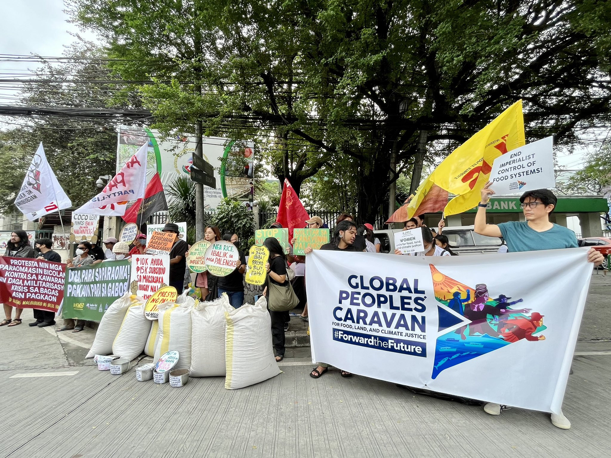

Introduction: A World Without Hunger
Millions of people worldwide are impacted by hunger, which transcends both geographic and social barriers. It is a fundamental component of initiatives aimed at sustainable development and both a symptom and a cause of poverty, conflict, and inequality. In addition to being humanitarian, ending hunger is both strategically and morally necessary. Societies may enhance social cohesion, productivity, and health by funding programs that support sustainable agriculture, nutrition, and food security. Taking on issues like poverty and inequality that are at the core of hunger can pave the road for inclusive and equitable development. "Planting Seeds of Change" captures the revolutionary potential of tackling hunger on a worldwide scale, with the goal of fostering a future in which hunger is eradicated and everyone has access to the fundamental right to food security and well-being.
Understanding the Roots of Hunger
A complicated problem with cultural, economic, and environmental roots is hunger. The main reason why people don't have access to enough food and nourishment is poverty. Food production and delivery are disrupted by conflict, which keeps people in a cycle of poverty. Hunger's effects are compounded by inequality, which also affects underprivileged people and upholds structural inequities. Due to its ability to upend agricultural systems and exacerbate environmental degradation, climate change poses a danger to food security. The production of food and livelihoods for farmers and food producers are threatened by rising temperatures and harsh weather. Additionally, hunger has an effect on entire economies and communities, hindering the development of human capital and extending cycles of inequality and poverty. Societies can create a society that is more just, egalitarian, and food secure by having a better understanding of the causes and effects of hunger.
Global Initiatives and Progress

By 2030, the Sustainable Development Goals (SDG 2) of the UN are to eradicate hunger, advance sustainable agriculture, and provide food security and better nutrition. Through improved market accessibility, sustainable farming methods, and enhanced agricultural output, progress has been achieved in lowering undernourishment and enhancing food security. The core causes of hunger have been partially addressed by targeted initiatives like school feeding programs and nutrition-sensitive agriculture. Conflicts, unstable political environments, humanitarian crises, the effects of climate change, structural inequality, gender inequality, and restricted access to resources are still problems, nevertheless. Despite these challenges, there is hope for the worldwide fight against hunger, since multilateral programs like the UN's Decade of Action are providing a boost.
Community Solutions and Innovations
In order to fight hunger, "Nourishing Communities: Grassroots Solutions" emphasizes the revolutionary potential of neighborhood projects and grassroots solutions. Food security, sustainable agriculture, and nutrition are being revolutionized by these projects, which have their roots in self-reliance, solidarity, and sustainability. Urban farms and community gardens rehabilitate abandoned lots in cities by giving people access to fresh, wholesome food and giving them the tools they need to grow their own food. Innovative methods of agriculture and diversifying sources of income improve resilience and lessen susceptibility to food insecurity in rural areas. Community-led initiatives focus on factors other than food production that contribute to hunger, such as social protection, healthcare, and educational opportunities. These community-based approaches provide a model for creating inclusive, sustainable food systems that never leave anybody behind.
Empowering Individuals to End Hunger

People may make a big difference in the fight against hunger by volunteering, speaking out, and making donations. In addition to directly helping individuals in need, these deeds also promote empathy and a sense of community within the community. As people have an impact on laws and procedures that deal with the underlying causes of hunger, advocacy is a powerful instrument for systemic change. Increasing public knowledge of food insecurity and promoting fair access to wholesome food may initiate thought-provoking conversations and motivate coordinated efforts on a local, national, and international scale. Contributions also operate as lifelines for hunger relief groups, allowing them to reach a wider audience and have a more significant impact on people that are most vulnerable. Every single contribution is a source of hope, sparking a movement that aims to eradicate hunger worldwide.
Stories of Resilience and Transformation

The struggle against hunger frequently brings people's resiliency and communities' strengths to light. Narratives from both urban and rural food deserts demonstrate the tenacity of individuals impacted by the problem. Three-time mother Maria had to decide whether to feed her kids or send them to school. She was given optimism despite the harsh circumstances by sustainable irrigation initiatives carried out by nearby farms and humanitarian groups. Raj, a street vendor, started a community kitchen to serve wholesome meals to underprivileged families and the homeless, fostering compassion and harmony in his neighborhood. These narratives show the transforming potential of group efforts in the battle against hunger, ranging from creative urban agricultural projects to grassroots campaigns. They encourage us to keep moving forward on our common path to create a society in which nobody
Future Directions and Call to Action
A world without hunger is an important objective that calls for cooperation from all people, groups, governments, and communities throughout the globe. Essential measures include addressing the underlying causes of hunger, combating poverty and inequality, encouraging sustainable agriculture, and guaranteeing fair access to resources. Progress, meanwhile, necessitates persistent dedication and cross-border cooperation. As a global society, we have to work together to overcome hunger as a barrier to human potential by pooling our knowledge, resources, and will. We can make this dream come true if we work together.